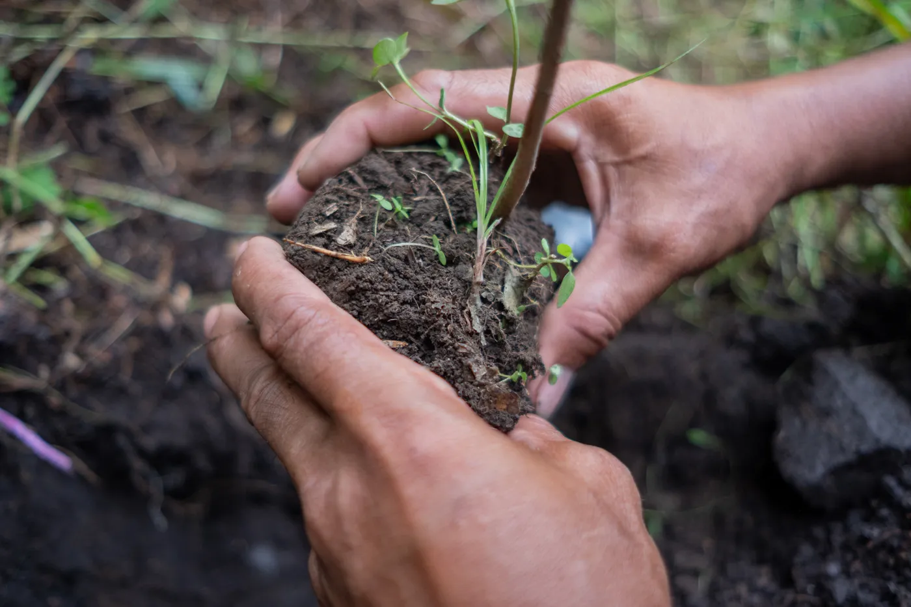
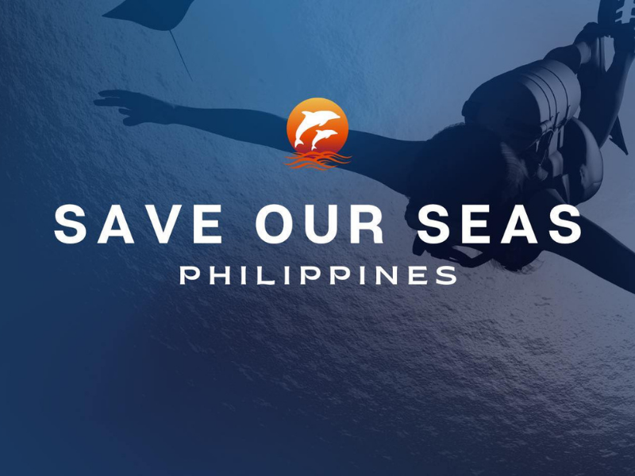
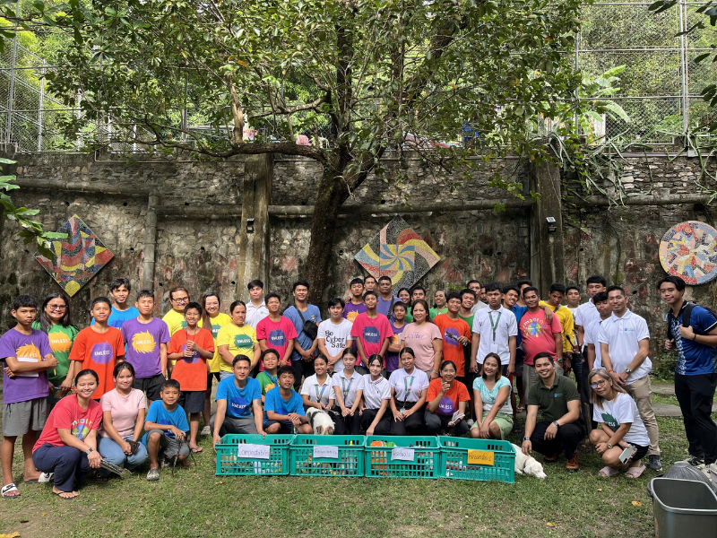
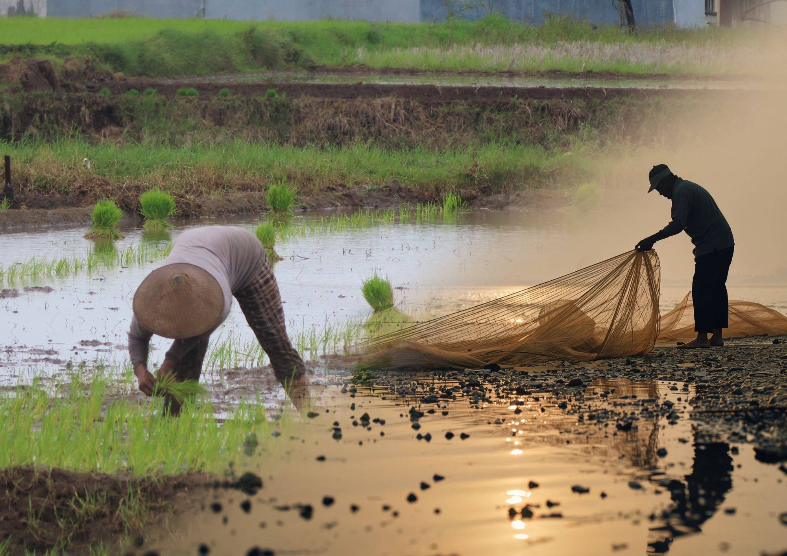
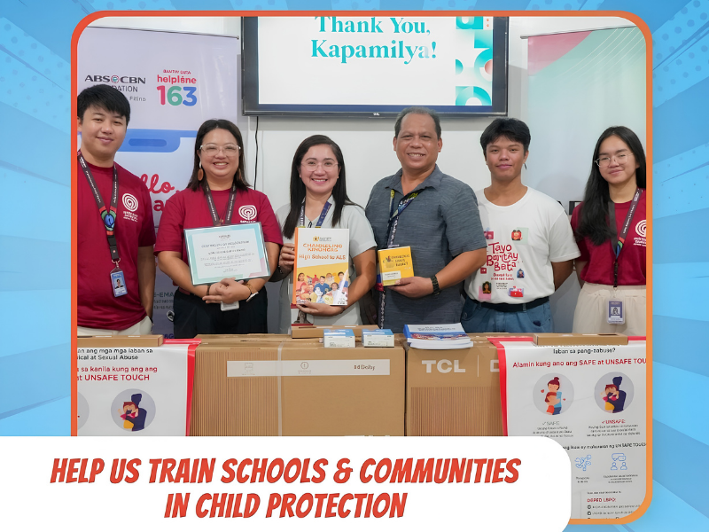
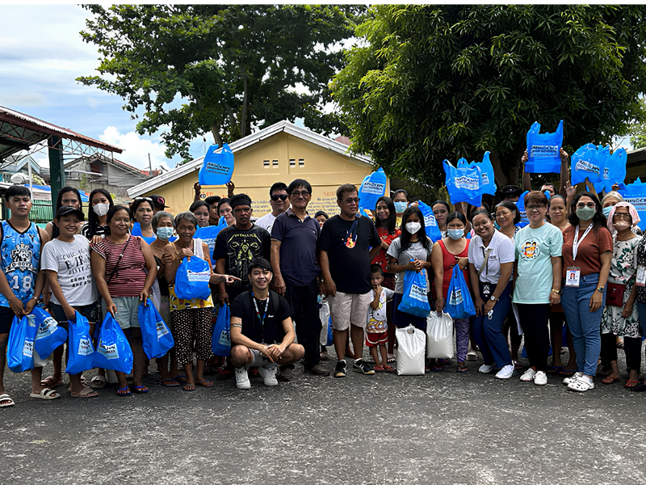

Every listing is a real cause — verified by our team, supported by science, and driven by community.

Support the restoration of denuded forests across the Sierra Madre. Your donation covers the cultivation and nurturing of native tree species.

Strengthen the protection of the country's marine frontiers by supporting educational materials and local community patrols.

Empower communities to implement strict segregation and circular economy models to eliminate plastic leakage.

Provide critical food packs to vegetable farmers and small-scale fishermen hit by extreme heat and rising costs.

Participate in a virtual run to fund child protection training in far-flung communities to prevent abuse.

Deliver relief packs and clean water to families displaced by Mayon Volcano's ongoing activity in Albay.